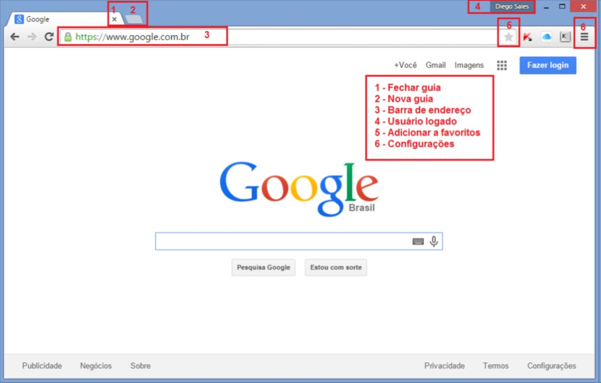
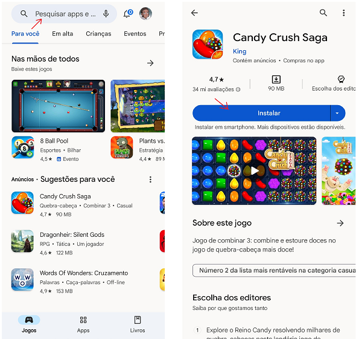
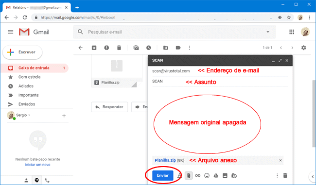
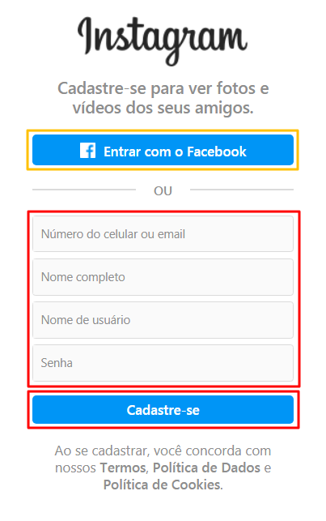
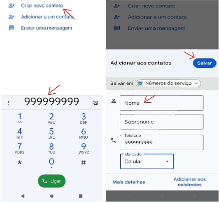
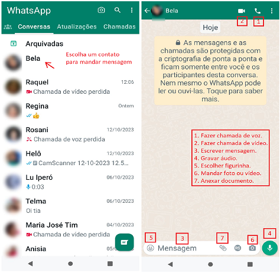
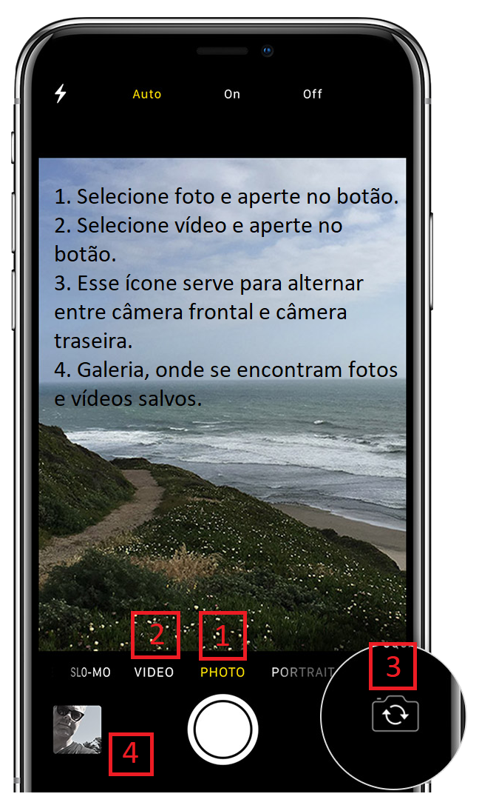
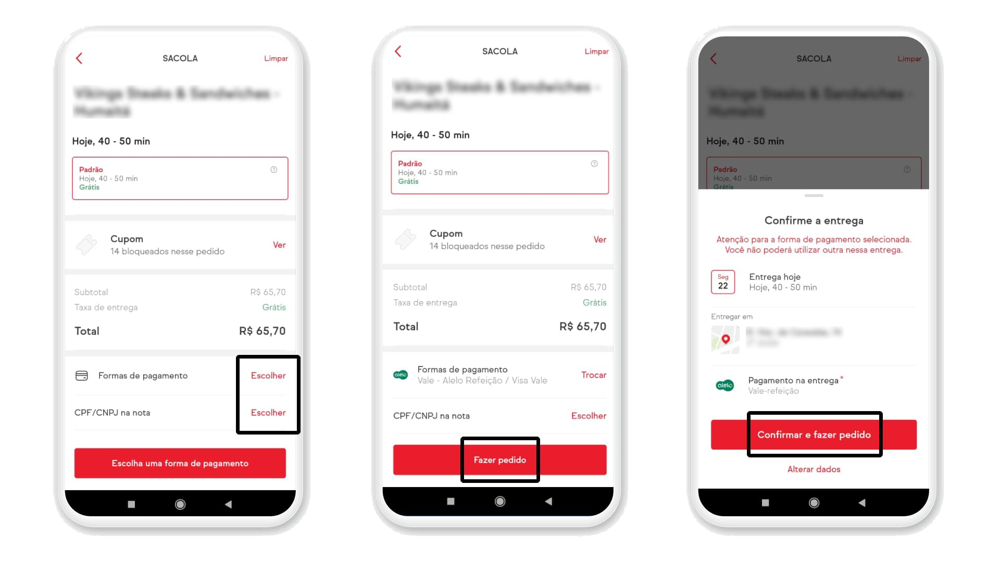

Tutoriais úteis para ajudar idosos a se familiarizarem com o mundo digital
Esses tutoriais não apenas ensinam habilidades práticas, mas também aumentam a confiança dos idosos no uso
da tecnologia, diminuindo a sensação de isolamento e contribuindo para uma melhor qualidade de vida.
Ao aprender a navegar no mundo digital, os idosos podem se sentir mais conectados, informados e
independentes.

- • No computador, abra o Chrome.
- • Na barra de endereço localizada na parte de cima da tela, digite sua pesquisa.
- • Selecione um resultado ou pressione Enter.
| 2 |
Como Baixar Aplicativos e Jogos |

- • No seu dispositivo, abra o Play Store.
- • Vá na busca e pesquise o aplicativo que queira instalar.
- • Ao encontrar o aplicativo, aperte em Instalar.

- • No seu dispositivo, abra o app Gmail.
- • No canto inferior direito, toque em Escrever.
- • No campo "Para", adicione os destinatários.
- • Adicione um assunto.
- • Escreva sua mensagem e/ou anexe um documento.
- • Na parte inferior da página, toque em Enviar.

- • Com a rede social baixada no seu dispositivo, toque em seu ícone.
- • Cadastre-se: Na tela inicial, toque em "Cadastre-se com o email ou número de telefone".
- • Preencha seus dados: Siga as instruções para preencher seu nome de usuário, senha, endereço de e-mail ou número de telefone, nome completo e outras informações possíveis.
- • Escolha um nome de usuário: Seu nome de usuário é único no Instagram, então escolha com cuidado. Você pode usar letras, números e pontos.
- • Configure seu perfil: adicione uma foto de perfil e uma breve descrição.
| 5 |
Como salvar número no celular |

- • No celular, abra o Telefone.
- • Vá para o teclado numérico.
- • Digite o número desejado.
- • Aperte em "Criar novo Contato".
- • Escreva o nome da pessoa e salve.
- • Para achar o contato no seu Whatsapp, vá no aplicativo e na busca escreva o nome da pessoa.
| 6 |
Como Enviar mensagens e fazer ligação |

| 7 |
Como tirar fotos e gravar vídeo |

- • Encontre o ícone da câmera.
- • Aponte a câmera para o que deseja fotografar ou gravar.
- • Toque no botão do obturador (geralmente um círculo) para tirar uma foto ou gravar um vídeo.
- • Ao terminar, aperte no mesmo botão para salvar.
- • A foto ou vídeo será salvo automaticamente em sua galeria.
| 8 |
Como fazer pedido de comida online |

- • Baixe um aplicativo de entrega de comida de sua escolha.
- • Abra o aplicativo após a instalação.
- • "Cadastre-se" e siga as instruções para criar uma conta, fornecendo seu nome, número de telefone e endereço de entrega.
- • Na busca, escolha pratos ou itens que você deseja encomendar.
- • Após selecionar seus itens, vá para o carrinho revisar se está tudo certo.
- • Escolha o método de pagamento.
- • Confirme o pedido e o pagamento.